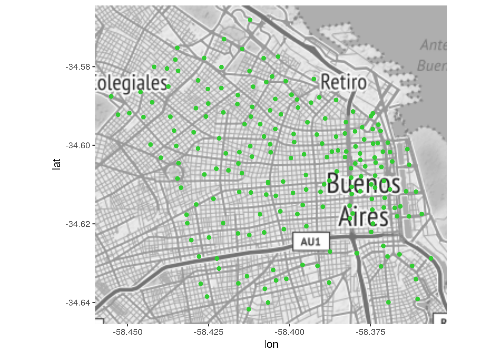
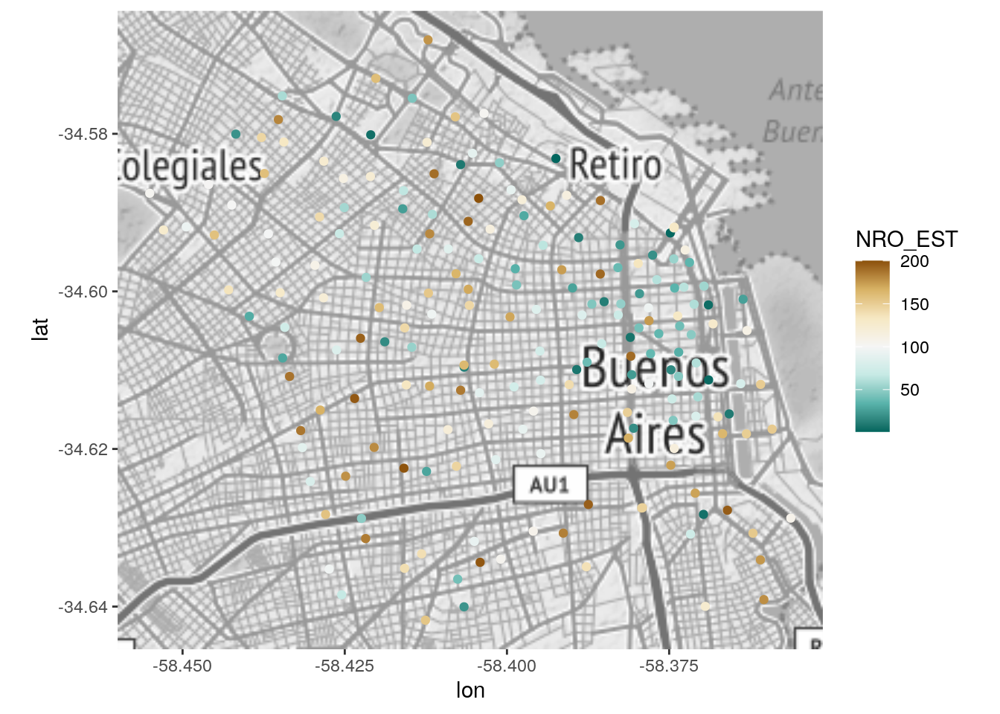
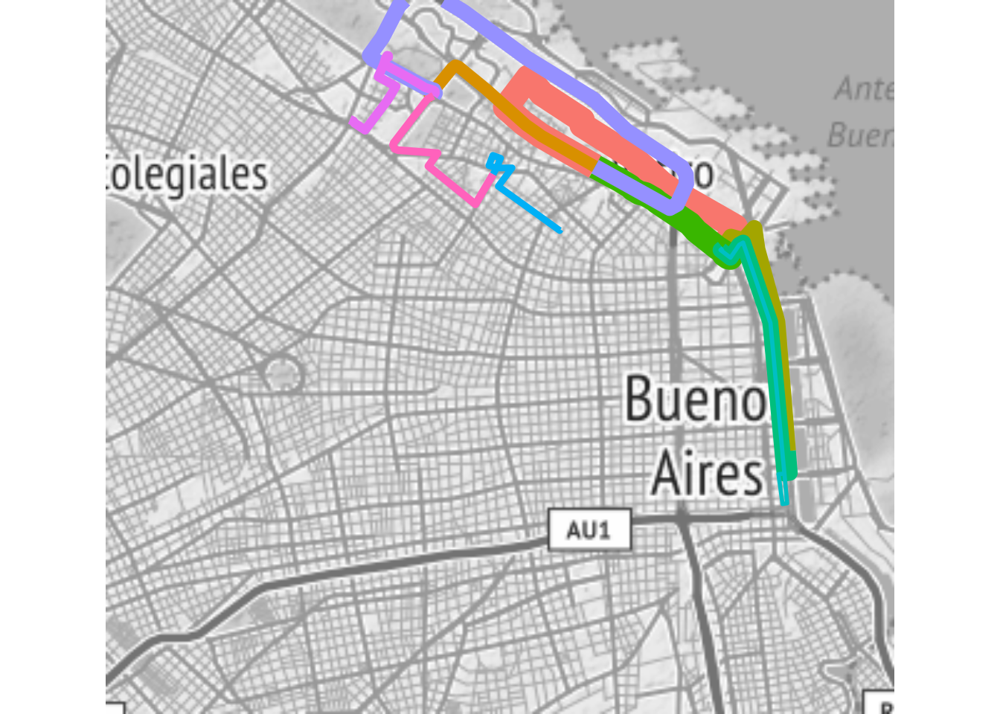

Capítulo 6 Analizando movimiento: el flujo de viajes urbanos
Los sistemas urbanos se caracterizan por dinámicas continuas de flujo, como el viaje de las personas entre su lugar de trabajo y de residencia. Estas dinámicas son capturadas en diversas bases de datos con creciente grado de granularidad espacio-temporal. La disponibilidad de coordenadas precisas de origen y destino, combinada con la posibilidad de acceder a sistemas de ruteo en calles, nos permite estimar los trayectos realizado por personas y vehículos representados en bases de datos.
6.1 Estimando rutas
En general, los datos de flujo disponibles en datasets a escala metropolitana (en contraste con los datos personales como los de GPS) son simples pares origen/destino. Una ejemplo de datos abiertos de este tipo, es el de la ubicación e intercambio entre estaciones de sistemas de bicicletas compartidas.
Por ejemplo, el portal de datos abiertos de la Ciudad de Buenos Aires ofrece datasets con los trayectos realizados por los usuarios del sistema de bicicletas públicas, así como la ubicación de las estaciones.
Si no lo hemos hecho aún, carguemos las librerías que vamos a necesitar.
Utilizaremos una porción de todos los trayectos disponibles, los que representan viajes en bicicletas públicas realizados durante el mes de abril de 2017:
## # A tibble: 113,650 x 6
## HORA ORIGEN_ESTACION NOMBRE_ORIGEN DESTINO_ESTACION
## <dttm> <dbl> <chr> <dbl>
## 1 2017-04-01 00:00:00 1 FACULTAD DE … 42
## 2 2017-04-01 00:00:00 5 PLAZA ITALIA 14
## 3 2017-04-01 00:00:00 5 PLAZA ITALIA 20
## 4 2017-04-01 00:00:00 5 PLAZA ITALIA 69
## 5 2017-04-01 00:00:00 5 PLAZA ITALIA 94
## 6 2017-04-01 00:00:00 5 PLAZA ITALIA 123
## 7 2017-04-01 00:00:00 6 PARQUE LEZAMA 17
## 8 2017-04-01 00:00:00 6 PARQUE LEZAMA 28
## 9 2017-04-01 00:00:00 6 PARQUE LEZAMA 118
## 10 2017-04-01 00:00:00 8 CONGRESO 1
## # … with 113,640 more rows, and 2 more variables: NOMBRE_DESTINO <chr>,
## # TOTAL <dbl>También descargamos un archivo de información geográfica con la posición de cada estación de bicicletas públicas:
## # A tibble: 199 x 10
## X Y NOMBRE DOMICILIO IMAGEN AUTOMAT OBSERV NRO_EST HORARIO DIRE_NORM
## <dbl> <dbl> <chr> <chr> <chr> <chr> <chr> <dbl> <chr> <chr>
## 1 -58.4 -34.6 FACULT… AV. PRES… ESTAC… AUTOMA… ABRIL… 1 ESTACI… FIGUEROA…
## 2 -58.4 -34.6 RETIRO AV. DR.J… ESTAC… AUTOMA… ABRIL… 2 ESTACI… DEL LIBE…
## 3 -58.4 -34.6 ADUANA AV. ING.… ESTAC… AUTOMA… ABRIL… 3 ESTACI… HUERGO, …
## 4 -58.4 -34.6 PLAZA … LAVALLE … ESTAC… AUTOMA… ABRIL… 4 ESTACI… LAVALLE …
## 5 -58.4 -34.6 PARQUE… AV MARTI… ESTAC… AUTOMA… ABRIL… 6 ESTACI… GARCIA, …
## 6 -58.4 -34.6 PLAZA … AV. SANT… ESTAC… AUTOMA… ABRIL… 5 ESTACI… SARMIENT…
## 7 -58.4 -34.6 OBELIS… AV. 9 DE… ESTAC… AUTOMA… ABRIL… 7 ESTACI… PELLEGRI…
## 8 -58.4 -34.6 CONGRE… AV. HIPO… ESTAC… AUTOMA… ABRIL… 8 ESTACI… YRIGOYEN…
## 9 -58.4 -34.6 PARQUE… PARQUE L… ESTAC… AUTOMA… ABRIL… 9 ESTACI… DIAZ, CN…
## 10 -58.4 -34.6 PUERTO… MOREAU D… ESTAC… AUTOMA… ABRIL… 10 ESTACI… 1500 MOR…
## # … with 189 more rowsAhora, las visualizamos.
Como preparativo obtenemos una “bounding box”, la caja de coordenadas que contiene todos los puntos:
## left bottom right top
## -58.46000 -34.64541 -58.35132 -34.56439Ahora descargamos un mapa que abarca el rectángulo de nuestra bounding box
mapa_base <- get_stamenmap(bbox, color = "bw", zoom = 12)
ggmap(mapa_base) +
geom_point(data = estaciones, aes(x = X, y = Y), color = "limegreen")
Podemos ver que las estaciones del sistema se concentran en el centro económico de la ciudad y sus zonas aledañas. No tenemos un campo con la fecha de inauguración que nos permita saber el orden en que se desplegaron las estaciones, pero podemos usar el número que les fue asignado (asumiendo que respetan un orden cronológico) para aproximarlo:
ggmap(mapa_base) +
geom_point(data = estaciones, aes(x = X, y = Y, color = NRO_EST)) +
scale_color_distiller(type = "div")
Si el número de estación refleja la antigüedad, pareciera que primero de desplegó un corredor desde el downtown hacia el noroeste, que luego se fue complementando con expansión radial.
6.2 Cuantificando interacción
A partir de ahora, agreguemos theme_nothing() para retirar todos los componentes auxiliares (como escalas y leyendas) y quedarnos solo con el mapa.
ggmap(mapa_base) +
geom_point(data = estaciones, aes(x = X, y = Y), color = "limegreen", size = 2) +
theme_nothing()
A continuación, realizamos un conteo de trayectos entre pares de estaciones
Podemos evaluar el grado de interconexión haciendo un heatmap, un mapa de calor que muestre la cantidad de viajes entre pares de estaciones. Hacemos uso de geom_tile() una geometría de ggplot() que genera rectángulos.
ggplot() +
geom_tile(data = conteo, aes(x = ORIGEN_ESTACION, y = DESTINO_ESTACION, fill = total)) +
scale_fill_distiller(palette = "Spectral")El gráfico revela una característica de los datos: la numeración de la estaciones es discontinua. Crece secuencialmente hasta casi 200, pero por alguna razón hay un par de estaciones numeradas por encima de 500. Lo verificamos:
## [1] 1 2 3 4 5 6 7 8 9 10 11 12 13 14 16 17 18 19
## [19] 20 21 22 23 24 25 26 27 28 29 30 31 32 33 34 35 36 37
## [37] 38 40 41 42 43 44 45 46 47 48 49 50 51 52 53 54 55 56
## [55] 57 58 59 60 61 62 63 64 65 66 68 69 70 71 72 73 74 75
## [73] 76 77 79 81 82 83 84 85 86 87 88 89 90 91 92 93 94 95
## [91] 96 98 99 100 101 103 104 105 106 108 109 110 111 112 113 114 115 118
## [109] 119 120 121 122 123 124 126 128 129 132 134 135 136 138 139 140 144 145
## [127] 146 149 150 151 152 153 154 158 160 161 164 166 167 172 173 175 176 181
## [145] 191 502 505Podemos evitar el hueco que aparece en el mapa de calor tratando a las estaciones como una variable categórica (un factor) en lugar de numérica
ggplot() +
geom_tile(data = conteo,
aes(x = as.factor(ORIGEN_ESTACION),
y = as.factor(DESTINO_ESTACION),
fill = total)) +
scale_fill_distiller(palette = "Spectral")La visualización es difícil de leer, pero aún así revela patrones. El tipo de viaje más popular es el de tomar y dejar la bicicleta en la misma estación, sugiriendo la prevalencia del uso recreativo. La interacción entre estaciones más alta se da entre las que tienen los primeros números, que como hemos visto se localizan en el centro de la ciudad. Las cantidad de combinaciones posibles crece rapidísimo con el número de nodos, por eso las interacción en redes grandes es difícil de visualizar.
Para continuar, tomemos sólo los 10 trayectos más frecuentes, descartando los viajes “circulares” (con el mismo origen y destino):
## # A tibble: 10 x 3
## ORIGEN_ESTACION DESTINO_ESTACION total
## <dbl> <dbl> <dbl>
## 1 1 2 333
## 2 1 44 146
## 3 2 1 311
## 4 2 10 181
## 5 2 164 115
## 6 9 44 121
## 7 10 2 182
## 8 30 9 118
## 9 44 1 176
## 10 44 14 127ggplot() +
geom_tile(data = top10,
aes(x = as.factor(ORIGEN_ESTACION),
y = as.factor(DESTINO_ESTACION),
fill = total)) +
scale_fill_distiller(palette = "Spectral")Como se vislumbra en el heatmap completo, la interacción entre las estaciones 1 y 2 es con diferencia la más frecuente.
6.3 Estimando rutas
Para trazar los trayectos de los usuarios al viajar de una estación a otra, no tendría sentido tender líneas rectas entre origen y destino. Para visualizar el tránsito, necesitamos tener en cuenta la ubicación de las calles y la dirección de tráfico que permiten. Lo ideal sería poder representar la ruta exacta de cada trayecto, sabiendo cuáles fueron las calles transitadas para realizar el viaje. Cuando no disponemos de información con ese nivel de detalle, lo que podemos hacer es estimar los recorridos utilizando un servicio de ruteo como el de Google Maps, o el del proyecto OSRM.
En R contamos con paquetes especializados para conectar con estos servicios y trabajar con información de ruteo. El paquete googleway() permite conectar R con la API de Google Maps, y osrm hace lo propio con OSRM.
Vamos con OSRM. Si no tenemos el paquete necesario, lo instalamos.
Y lo activamos:
Para poder recibir información de ruteo desde los servidores de Google, la compañía exige el uso de una API key, una clave de autorización. Tal como con Twitter, el proceso de adquirir una clave es instantáneo, pero desde mediados de 2018 Google entrega API key sólo a usuarios que brinden información de una tarjeta de crédito, para cobrar el uso que supere ciertos umbrales.
Para quienes deseen hacer uso de las múltiples funciones que Google ofrece a través de sus APIs, la molestia vale la pena, y puede seguir éstos pasos: https://developers.google.com/maps/documentation/directions/get-api-key.
Para resolver el problema del ejercicio, nosotros optaremos por el ruteo vía OSRM que no requiere permiso ni tarjetas de crédito.
Para encontrar una ruta, usamos la función osrmRoute, que requiere origen y destino en forma de vectores conteniendo un identificador (nombre del lugar o posición), longitud y latitud. Por ejemplo, para rutear entre dos lugares en Buenos Aires como Parque Centenario y la Estación Retiro:
pcentenario <- c(nombre = "Parque Centenario",
lon = -58.435609,
lat = -34.606411)
eretiro <- c(nombre = "Estación Retiro",
lon = -58.374873,
lat = -34.591394)
centenario_a_retiro <- osrmRoute(src = pcentenario,
dst = eretiro,
returnclass = "sf",
overview = "full")La opción returnclass = "sf" permite obtener un dataframe espacial como resultado, que podemos proyectar luego sobre un mapa. overview = "full" hace que osrmRoute calcule la ruta precisa (con posiciones exactas) en lugar de un aproximado; de nuevo, solicitamos esto para luego poder visualizar el camino exacto en un mapa.
osrmRoute también estima la duración (en minutos) y la distancia (en kilómetros) del trayecto, como se ve en los campos “duration” y “distance”:
## Simple feature collection with 1 feature and 4 fields
## geometry type: LINESTRING
## dimension: XY
## bbox: xmin: -58.4355 ymin: -34.60568 xmax: -58.37324 ymax: -34.57317
## epsg (SRID): 4326
## proj4string: +proj=longlat +datum=WGS84 +no_defs
## src dst duration
## Parque Centenario_Estación Retiro Parque Centenario Estación Retiro 32.39333
## distance geometry
## Parque Centenario_Estación Retiro 9.0622 LINESTRING (-58.4355 -34.60...Podemos revisar rápidamente la ruta hallada usando leaflet:
Ahora, lo intentamos con los datos de viajes en bicicleta. Hacemos un join del dataframe con el conteo de viajes contra el de posición de estaciones, para agregar las coordenadas.
De origen:
top10 <- top10 %>%
left_join(estaciones[c("X", "Y", "NOMBRE", "NRO_EST")],
by = c("ORIGEN_ESTACION" = "NRO_EST")) %>%
rename(ORIGEN_X = X,
ORIGEN_Y = Y,
ORIGEN_NOMBRE = NOMBRE)
top10## # A tibble: 10 x 6
## ORIGEN_ESTACION DESTINO_ESTACION total ORIGEN_X ORIGEN_Y ORIGEN_NOMBRE
## <dbl> <dbl> <dbl> <dbl> <dbl> <chr>
## 1 1 2 333 -58.4 -34.6 FACULTAD DE DERECHO
## 2 1 44 146 -58.4 -34.6 FACULTAD DE DERECHO
## 3 2 1 311 -58.4 -34.6 RETIRO
## 4 2 10 181 -58.4 -34.6 RETIRO
## 5 2 164 115 -58.4 -34.6 RETIRO
## 6 9 44 121 -58.4 -34.6 PARQUE LAS HERAS
## 7 10 2 182 -58.4 -34.6 PUERTO MADERO - UCA
## 8 30 9 118 -58.4 -34.6 PEÑA
## 9 44 1 176 -58.4 -34.6 ZOOLOGICO
## 10 44 14 127 -58.4 -34.6 ZOOLOGICOY además las de destino:
top10 <- top10 %>%
left_join(estaciones[c("X", "Y", "NOMBRE", "NRO_EST")],
by = c("DESTINO_ESTACION" = "NRO_EST")) %>%
rename(DESTINO_X = X,
DESTINO_Y = Y,
DESTINO_NOMBRE = NOMBRE)
top10## # A tibble: 10 x 9
## ORIGEN_ESTACION DESTINO_ESTACION total ORIGEN_X ORIGEN_Y ORIGEN_NOMBRE
## <dbl> <dbl> <dbl> <dbl> <dbl> <chr>
## 1 1 2 333 -58.4 -34.6 FACULTAD DE …
## 2 1 44 146 -58.4 -34.6 FACULTAD DE …
## 3 2 1 311 -58.4 -34.6 RETIRO
## 4 2 10 181 -58.4 -34.6 RETIRO
## 5 2 164 115 -58.4 -34.6 RETIRO
## 6 9 44 121 -58.4 -34.6 PARQUE LAS H…
## 7 10 2 182 -58.4 -34.6 PUERTO MADER…
## 8 30 9 118 -58.4 -34.6 PEÑA
## 9 44 1 176 -58.4 -34.6 ZOOLOGICO
## 10 44 14 127 -58.4 -34.6 ZOOLOGICO
## # … with 3 more variables: DESTINO_X <dbl>, DESTINO_Y <dbl>,
## # DESTINO_NOMBRE <chr>Probemos rutear el trayecto más popular, el de Facultad de Derecho a Retiro:
viaje <- top10[1,]
fderecho_a_retiro <- osrmRoute(src = c(viaje$ORIGEN_NOMBRE, viaje$ORIGEN_X, viaje$ORIGEN_Y),
dst = c(viaje$DESTINO_NOMBRE, viaje$DESTINO_X, viaje$DESTINO_Y),
returnclass = "sf",
overview = "full")
fderecho_a_retiro## Simple feature collection with 1 feature and 4 fields
## geometry type: LINESTRING
## dimension: XY
## bbox: xmin: -58.40488 ymin: -34.59253 xmax: -58.37324 ymax: -34.57317
## epsg (SRID): 4326
## proj4string: +proj=longlat +datum=WGS84 +no_defs
## src dst duration distance
## FACULTAD DE DERECHO_RETIRO FACULTAD DE DERECHO RETIRO 15.24167 5.4226
## geometry
## FACULTAD DE DERECHO_RETIRO LINESTRING (-58.39256 -34.5...Si queremos ver el trayecto en un mapa estático, podemos usar ggmap() con geom_sf():
ggmap(mapa_base) +
geom_point(data = estaciones, aes(x = X, y = Y), color = "limegreen", size = 2) +
geom_sf(data = fderecho_a_retiro, color = "red", inherit.aes = FALSE) +
theme_nothing()Calcular todos los recorridos y juntarlos en un sólo dataframe puede ser muy fácil o bastante engorroso, dependiendo de cuanta práctica tengamos en la automatización de tareas repetitivas. Por lo pronto, podemos descargar un dataset ya calculado con los recorridos detallados entre todas las estaciones de nuestro top 10:
## Reading layer `recorridos_BA_bici' from data source `https://bitsandbricks.github.io/data/recorridos_BA_bici.geojson' using driver `GeoJSON'
## Simple feature collection with 10 features and 6 fields
## geometry type: LINESTRING
## dimension: XY
## bbox: xmin: -58.42635 ymin: -34.62158 xmax: -58.36573 ymax: -34.5627
## epsg (SRID): 4326
## proj4string: +proj=longlat +datum=WGS84 +no_defs## Simple feature collection with 10 features and 6 fields
## geometry type: LINESTRING
## dimension: XY
## bbox: xmin: -58.42635 ymin: -34.62158 xmax: -58.36573 ymax: -34.5627
## epsg (SRID): 4326
## proj4string: +proj=longlat +datum=WGS84 +no_defs
## ORIGEN_ESTACION DESTINO_ESTACION src dst duration distance
## 1 1 2 1 2 16.005000 5.4228
## 2 1 44 1 44 6.741667 2.7496
## 3 2 1 2 1 7.198333 2.3073
## 4 2 10 2 10 10.708333 3.8060
## 5 2 164 2 164 11.688333 4.3380
## 6 9 44 9 44 8.775000 2.8171
## 7 10 2 10 2 11.023333 3.4170
## 8 30 9 30 9 7.986667 2.0258
## 9 44 1 44 1 13.831667 7.8749
## 10 44 14 44 14 8.278333 2.4001
## geometry
## 1 LINESTRING (-58.39256 -34.5...
## 2 LINESTRING (-58.39256 -34.5...
## 3 LINESTRING (-58.37493 -34.5...
## 4 LINESTRING (-58.37493 -34.5...
## 5 LINESTRING (-58.37493 -34.5...
## 6 LINESTRING (-58.40661 -34.5...
## 7 LINESTRING (-58.36598 -34.6...
## 8 LINESTRING (-58.39733 -34.5...
## 9 LINESTRING (-58.41484 -34.5...
## 10 LINESTRING (-58.41484 -34.5...Los que quieran espiar un método para compilar los recorrido por su cuenta, puede verlo al final del documento.
Para poder asignar un color a cada recorrido, creamos un identificador único para diferenciarlos
Y ahora, al mapa:
ggmap(mapa_base) +
geom_sf(data = recorridos, aes(color = ID), inherit.aes = FALSE) +
theme_nothing()Si queremos que el grosor de la línea represente la cantidad de veces que se realizó cada recorrido, primero agregamos la cantidad de viajes por recorrido, mediante el cruce con los datos que calculamos en “conteo”:
Y luego los usamos en el mapa:
ggmap(mapa_base) +
geom_sf(data = recorridos, aes(color = ID, size = total), alpha = 0.7, inherit.aes = FALSE) +
theme_nothing()
También podemos usar el color para indicar el volumen de viajes:
6.4 EXTRA: Cómo obtener las rutas de todos los recorridos
Tras leer el capítulo de 21 de R for Data Science, “iteration”, ésto debería tener sentido:
obtener_recorrido <- function(o_nombre, o_x, o_y, d_nombre, d_x, d_y) {
ruta <- osrmRoute(src = c(o_nombre, o_x, o_y),
dst = c(d_nombre, d_x, d_y),
returnclass = "sf")
cbind(ORIGEN_ESTACION = o_nombre, DESTINO_ESTACION = d_nombre, ruta)
}
argumentos <- list(top10$ORIGEN_ESTACION, top10$ORIGEN_X, top10$ORIGEN_Y,
top10$DESTINO_ESTACION, top10$DESTINO_X, top10$DESTINO_Y)
recorridos <- pmap(argumentos, obtener_recorrido)
recorridos <- reduce(recorridos, rbind)## Simple feature collection with 10 features and 8 fields
## geometry type: LINESTRING
## dimension: XY
## bbox: xmin: -58.42635 ymin: -34.62158 xmax: -58.36573 ymax: -34.5627
## epsg (SRID): 4326
## proj4string: +proj=longlat +datum=WGS84 +no_defs
## ORIGEN_ESTACION DESTINO_ESTACION src dst duration distance ID total
## 1 1 2 1 2 16.005000 5.4228 1 - 2 333
## 2 1 44 1 44 6.741667 2.7496 1 - 44 146
## 3 2 1 2 1 7.198333 2.3073 2 - 1 311
## 4 2 10 2 10 10.708333 3.8060 2 - 10 181
## 5 2 164 2 164 11.688333 4.3380 2 - 164 115
## 6 9 44 9 44 8.775000 2.8171 9 - 44 121
## 7 10 2 10 2 11.023333 3.4170 10 - 2 182
## 8 30 9 30 9 7.986667 2.0258 30 - 9 118
## 9 44 1 44 1 13.831667 7.8749 44 - 1 176
## 10 44 14 44 14 8.278333 2.4001 44 - 14 127
## geometry
## 1 LINESTRING (-58.39256 -34.5...
## 2 LINESTRING (-58.39256 -34.5...
## 3 LINESTRING (-58.37493 -34.5...
## 4 LINESTRING (-58.37493 -34.5...
## 5 LINESTRING (-58.37493 -34.5...
## 6 LINESTRING (-58.40661 -34.5...
## 7 LINESTRING (-58.36598 -34.6...
## 8 LINESTRING (-58.39733 -34.5...
## 9 LINESTRING (-58.41484 -34.5...
## 10 LINESTRING (-58.41484 -34.5...6.5 Ejercicios
Analizando y visualizando flujos de viajes urbanos
I. Elegir UNA SOLA de las siguientes opciones: a. Un dataset que contenga viajes origen-destino (por ejemplo bicicletas públicas) de la Ciudad con la que están trabajando. b. Un dataset que contenga servicios esenciales (hospitales, escuelas, comisarías, etc) de la Ciudad con la que están trabajando. En este caso deberán elegir un barrio céntrico y uno periférico del shape de barrios y calcular ambos centroides. Los datos pueden ser descargados del portal open data de la ciudad o de OSM y deben tener ubicación geográfica.
- Según la opción elegida en el punto I, deberán:
- Viajes origen-destino: Analizar la cantidad de viajes entre los puntos a partir de un mapa de calor (heatmap) y calcular los 10 recorridos más realizados. Describir los resultados obtenidos y hacer el siguiente mapa:
- Mapa con los ruteos de los 10 recorridos más realizados.
- Servicios esenciales: Estimar la distancia entre los centroides calculados en el punto I y los ítems que componen la capa descargada. Describir los resultados obtenidos y hacer los siguientes mapas:
- Mapa con los ruteos del centroide del barrio céntrico a los ítems de servicios esenciales elegido.
- Mapa con los ruteos del centroide del barrio periférico a los ítems de servicios esenciales elegido.
PRO TIP! Si bajan datos de OpenStreetMap -por ejemplo, escuelas de una ciudad- los tendrán en formato sf. Un dataframe sf tiene sus coordenadas en una sola columna, “geometry”. Pero que pasa si quieren los datos en dos columnas, lat y long, para que puedan aprovechar los ejemplos de funciones de ruteo que vimos en clase?
Muy simple. Si su dataframe en formato sf se llama “misdatos”, así es como obtienen columnas con lat y long:
misdatos <- misdatos %>% mutate(lat = unlist(map(misdatos\(geometry,1)), long = unlist(map(misdatos\)geometry,2)))